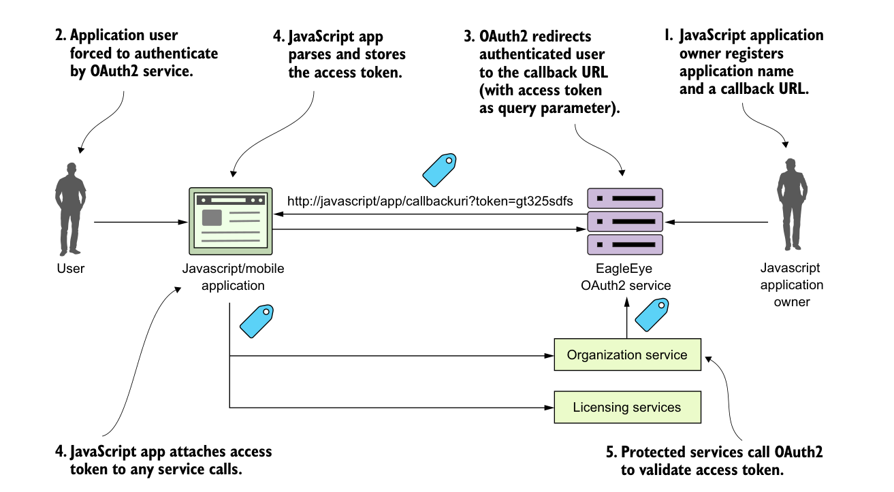

JavaScript application owner registers application name and a callback URL.
Application user forced to authenticate by OAuth2 service.
OAuth2 redirects authenticated user to the callback URL (with access token as query parameter).
JavaScript app parses and stores the access token.
JavaScript app attaches access token to any service calls.
Protected services call OAuth2 to validate access token.

The implicit grant is used in a browser-based Single-Page Application (SPA) JavaScript application.
With an implicit grant, you’re usually working with a pure JavaScript application running completely inside of the browser. In the other flows, the client is communicating with an application server that’s carrying out the user’s requests and the application server is interacting with any downstream services. With an implicit grant type, all the service interaction happens directly from the user’s client (usually a web browser). In figure B.4, the following activities are taking place:
- The owner of the JavaScript application has registered the application with the EagleEye OAuth2 server. They’ve provided an application name and also a callback URL that will be redirected with the OAuth2 access token for the user.
- The JavaScript application will call to the OAuth2 service. The JavaScript application must present a pre-registered application name. The OAuth2 server will force the user to authenticate.
- If the user successfully authenticates, the EagleEye OAuth2 service won’t return a token, but instead redirect the user back to a page the owner of the JavaScript application registered in step one. In the URL being redirected back to, the OAuth2 access token will be passed as a query parameter by the OAuth2 authentication service.
- The application will take the incoming request and run a JavaScript script that will parse the OAuth2 access token and store it (usually as a cookie).